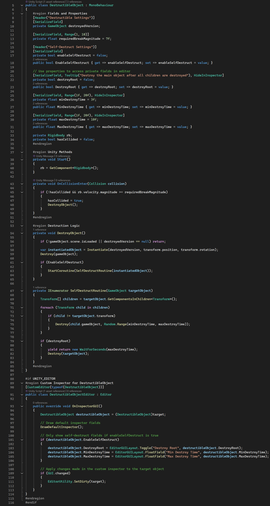

For the first block of my second year of studies, we were tasked with creating a VR game set 30 years
into an imagined future. Our team decided to depict and explore this futuristic world through a game where players manage a news broadcast station.
Predicting that people's attention spans will continue to decrease, we designed bite-sized news stories (maximum 20 seconds each).
The game includes current world events as part of the news stories, which players can choose to broadcast.
Players must strategically select news stories to influence the world around them while managing the station's key statistics
(money, viewership, and awareness raised). Additionally, they must determine which ads are aired and work to prevent the world
from descending into chaos.
My Contributions
Implemented a Destroy Zone for optimization and error prevention.
In VR, players could throw objects outside the world,
which could be problematic since some objects are required for gameplay,
such as the mug in the tutorial and the news stories in the main gameplay loop.
Implemented object destruction mechanics, including physics-based breakage with a custom editor.

Main class of the news stories which acts as a facade between systems sending their data.
Also holds the logic for automatically setting variables and setting the state of the news story to used.
Designed a system to dynamically generate news stories based on in-game events and player choices.
Created a system that tracks and updates statistics for news stories, influencing gameplay and narrative.
Developed a system where in-game choices affect political standings, leading to branching consequences.
Implemented a dynamic system that randomises trending news topics, ensuring varied playthroughs.
Added interactive room elements including:
Functional coffee machine
Auto-opening door
Studio camera with 'On Air' light and display view
Door:
Designed a user-friendly statistics display to track player progress and game impact.
Assisted team members with coding challenges, debugging, and optimising game systems.
TrashShute Script which I helped a teammate debug and optimize.
Developed a guided tutorial to introduce players to mechanics and gameplay objectives.